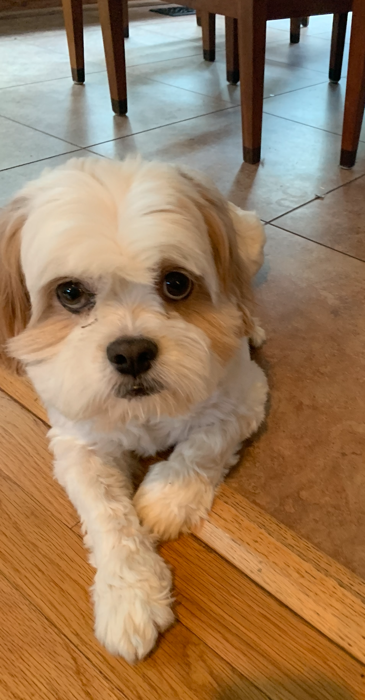

CJ
CJ is a 10 year old Cava tzu, which is a mix between a King Chareles Cavalier and a Shit Tzu. He is about 20 pounds and is white with ruby markings. CJ has the same birthday as my brother Connor so CJ stands for Connor Junior. CJ loves going on walks and playing fetch. But, he is not a fan of other dogs or being held. He will let my family hold him sometimes but he does not love it. CJ used to be really mean to other dogs until we god Crosby in May of 2020.
